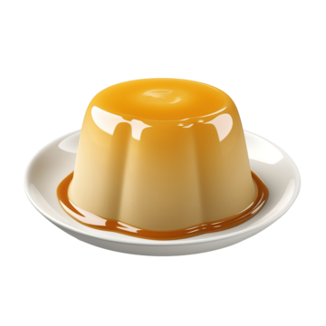

Pudding
Back to Recipes

Description
Pudding is a creamy dessert that can be made in various flavors, such as chocolate, vanilla, or butterscotch.
Ingredients
- Milk
- Sugar
- Cornstarch
- Salt
- Vanilla extract
- Butter
Steps
- In a saucepan, mix sugar, cornstarch, and salt.
- Add milk gradually while stirring to avoid lumps.
- Cook over medium heat until the mixture thickens and bubbles.
- Remove from heat and stir in vanilla extract and butter.
- Pour into serving dishes and refrigerate until set.